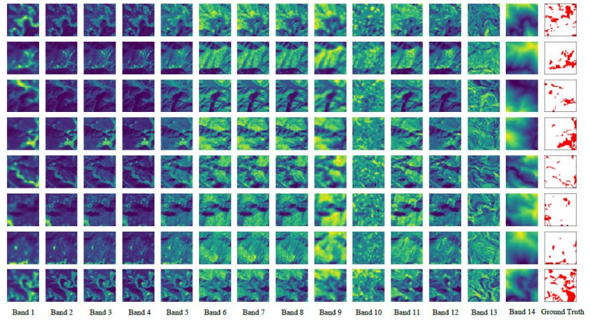

About Me
Hello, I'm an open-source contributor at the Open Source Geospatial Foundation (OSGeo) , where I participated in Google Summer of Code 2025. My work focused on developing tools to make geospatial datasets more AI-ready using open standards such as GeoCroissant and the SpatioTemporal Asset Catalog (STAC). I recently earned my B.Tech degree in Electronics and Telecommunication from KDK College of Engineering . My interests lie at the intersection of Remote Sensing, GeoAI, and data-centric AI, with a strong focus on metadata standardization and building scalable, machine-learning-ready pipelines for Earth observation data.
News
- May. 2025: Selected as GSoC Contributor 2025 at OSGeo Foundation, working on geospatial datasets and AI-ready tools using standards like GeoCroissant and STAC.
- Mar. 2025: Submitted paper "Landslide Detection and Mapping Using Deep Learning Across Multi-Source Satellite Data and Geographic Regions" to JETIR 2025 Journal of Emerging Technologies and Innovative Research.
- Mar. 2025: Submitted paper "A Comprehensive Approach to Landslide Detection: Deep Learning and Remote Sensing Integration" to IJARCCE 2025 International Journal of Advanced Research in Computer and Communication Engineering.
- Feb. 2025: Submitted paper "An Exhaustive Review on Deep Learning for Advanced Landslide Detection and Prediction from Multi-Source Satellite Imagery" to JETIR 2025 Journal of Emerging Technologies and Innovative Research.
- Jan. 2025: Selected as Research Intern at MRSAC, focusing on geospatial technologies, remote sensing, spatial data analysis, and GIS applications.
- Jan. 2025: Selected for Google Cloud Arcade Facilitator Program Cohort 1 as a Mentor, continuing to guide students in cloud technologies.
- Aug. 2024: Secured Second Runner-Up position in the prestigious VNIT Geo Spatial AI Challenge organized by ISRO - RRSC, Nagpur!
- Jul. 2024: Honored to announce selection as an Arcade Facilitator for the 2024 cohort of the Google Cloud Arcade Facilitator program as a Mentor.
Selected Publications

Landslide Detection and Mapping Using Deep Learning Across Multi-Source Satellite Data and Geographic Regions
Harsh Shinde , Rahul Burange, Omkar Mutyalwar
Journal of Emerging Technologies and Innovative Research (JETIR) 2025
Experience
To implement AI-ready Dataset Metadata as a Service using ZOO-Project, this project integrates GeoCroissant metadata, Data-Centric AI workflows, and OGC API – Processes. It enables standardized, high-quality geospatial data pipelines optimized for machine learning applications.
Analyzing land use/land cover change, urban heat islands, and land surface temperature (LST) variations in the Nagpur region using remote sensing data. Creating building footprint datasets for regions in Turkey through high-resolution satellite imagery and GIS techniques. Detecting farm boundaries using EO data and spatial analysis to support agricultural land mapping and monitoring.
Projects

DeepSlide: Landslide Detection Application
A Streamlit web app for landslide detection from satellite imagery using 13+ deep learning models. Upload images and get instant segmentation predictions with single or multi-model comparison.

Student Management System
A real-time student management system built with Python, MongoDB, and Tkinter GUI. Features CRUD operations, database integration, and executable app creation.
Leadership
Mentored and guided 300+ students in Google Cloud Platform (GCP), covering Kubernetes, Cloud Functions, Apigee, Firebase, and core services like compute, storage, and networking. Provided hands-on support with Kubernetes cluster management, serverless Cloud Functions, API management via Apigee, and Firebase integration for scalable applications. Organized events, solved technical doubts, and maintained student engagement through continuous support and motivation.
Awards
- Aug. 2024: Second Runner-Up on VNIT Geo Spatial AI Challenge organized by ISRO, RRSC, Nagpur
- Nov. 2023: Runner-Up at MLH Hackathon for developing and presenting Inventory Management System
Academics
2021 - 2025 | CGPA: 8.01/10
Karmaveer Dadasaheb Kannamwar Engineering College (KDKCE), Nagpur, India